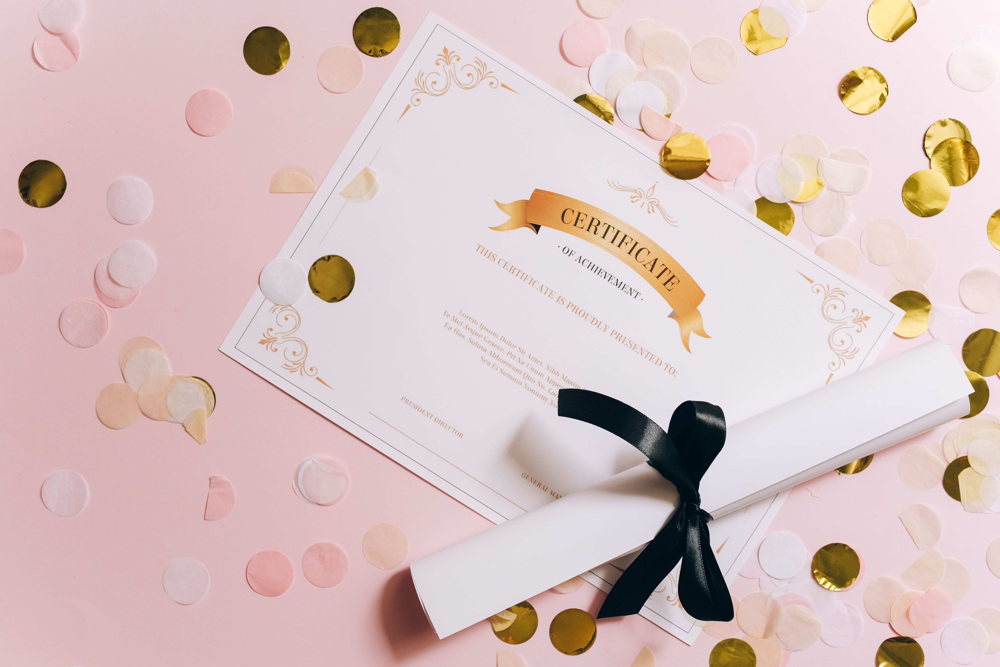

WhatsApp Automation
Automation project
WELCOME TO MY SPACE
A personal space for technology, creativity and ideas.
Explore my journeyTHE PATH SO FAR
Two paths. One journey.
Automation project
Python game
WhatsApp and multiple applications
Webpage with payment system
2021
2021
2022
2024
2025
PROOF OF LEARNING
A look at my learning journey.

HAVE AN IDEA OR OPPORTUNITY?
Reach out and let's start a conversation.
TAKE A CLOSER LOOK
Choose the profile you want to explore.